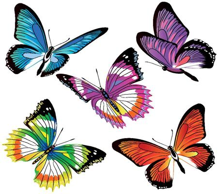
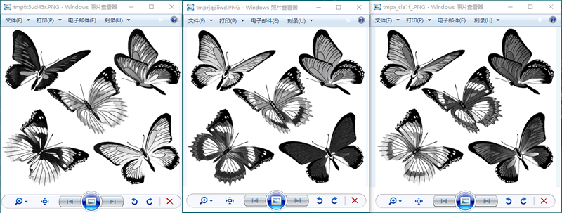
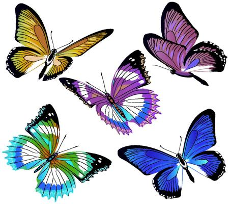
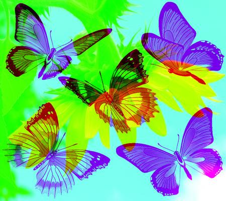
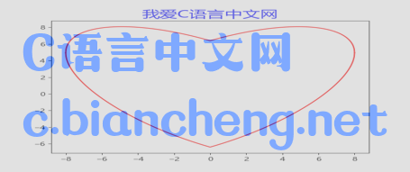

Pillow图像分离与合并
我们知道，图像（指数字图像）由许多像素点组成，像素是组成图像的基本单位，而每一个像素点又可以使用不同的颜色，最终呈现出了绚丽多彩的图像。在《Pillow Image对象属性》一节，我们介绍一些图片模式，它们的本质就是图片呈现颜色时需要遵循的规则，比如 RGB、RGBA、CYMK 等，而图像的分离与合并，指的就是图像颜色的分离和合并。
Image 类提供了用于分离图像和合并图像的方法 split() 和 merge() 方法，通常情况下，这两个方法会一起使用。
代码如下所示：
merge() 方法的语法格式如下：
注意，该函数会返回一个新的 Image 对象。
下面对图像合并的两种类型分别进行介绍：
一. 单个图像的合并指的是将颜色通道进行重新组合，从而得到不一样的图片效果，代码如下所示：
新合成的图像入如下所示：
两张图片的合并操作也并不复杂，但是要求两张图片的模式、图像大小必须要保持一致，否则不能合并。因此，对于那些模式、大小不同的图片要进行预处理。
下面我们将蝴蝶图与向日葵图进行合并，向日葵原图如下：
图4：向日葵原图
示例代码如下：
与 RGB 模式相比，RGBA 在 RGB 的基础上增加了透明度，通过 Alpha 取值来决定两个图像的混合程度。示例如下：
输出结果如下：
Image 类提供了用于分离图像和合并图像的方法 split() 和 merge() 方法，通常情况下，这两个方法会一起使用。
split()
split() 的使用方法比较简单，用来分离颜色通道。我们使用它来处理蝴蝶图片：

图1：pilow 图像处理操作
图1：pilow 图像处理操作
代码如下所示：
im=Image.open("C:/Users/Administrator/Desktop/1.jpg")
#修改图像大小，以适应图像处理
image=im.resize((450,400))
image.save("C:/Users/Administrator/Desktop/2.jpg")
#分离颜色通道，产生三个 Image对象
r,g,b = image.split()
r.show()
g.show()
b.show()
输出的结果，依次展示如下：

图2：分离结果预览
图2：分离结果预览
merge()
Image 类提供的 merge() 方法可以实现图像的合并操作。注意，图像合并，可以是单个图像合并，也可以合并两个以上的图像。merge() 方法的语法格式如下：
Image.merge(mode, bands)参数说明如下：
- mode：指定输出图片的模式
- bands：参数类型为元组或者列表序列，其元素值是组成图像的颜色通道，比如 RGB 分别代表三种颜色通道，可以表示为 (r,g,b)。
注意，该函数会返回一个新的 Image 对象。
下面对图像合并的两种类型分别进行介绍：
一. 单个图像的合并指的是将颜色通道进行重新组合，从而得到不一样的图片效果，代码如下所示：
from PIL import Image
im=Image.open("C:/Users/Administrator/Desktop/1.jpg")
#修改图像大小，以适应图像处理
image=im.resize((450,400))
image.save("C:/Users/Administrator/Desktop/2.jpg")
#分离颜色通道，产生三个 Image对象
r,g,b = image.split()
#重新组合颜色通道，返回先的Image对象
image_merge=Image.merge('RGB',(b,g,r))
image_merge.show()
#保存图像至桌面
image_merge.save("C:/Users/Administrator/Desktop/3.jpg")
新合成的图像入如下所示：

图3：图像合并操作
图3：图像合并操作
两张图片的合并操作也并不复杂，但是要求两张图片的模式、图像大小必须要保持一致，否则不能合并。因此，对于那些模式、大小不同的图片要进行预处理。
下面我们将蝴蝶图与向日葵图进行合并，向日葵原图如下：
图4：向日葵原图
示例代码如下：
from PIL import Image
#打开图2.jpg
im_1 = Image.open("C:/Users/Administrator/Desktop/2.jpg")
im_2= Image.open("C:/Users/Administrator/Desktop/向日葵.jpg")
#因为两种图片的图片格式一致，所以仅需要处理图片的大小，让它们保持一致
#让 im_2 的图像尺寸与 im_1 一致,注意此处新生成了 Image 对象
image = im_2.resize(im_1.size)
#接下来，对图像进行颜色分离操作
r1, g1 ,b1 = im_1.split()
r2, g2 , b2 = image.split()
# 合并图像
im_3 = Image.merge('RGB',[r2,g1,b2])
im_3.show()
im_3.save("C:/Users/Administrator/Desktop/合成.jpg")
预览图像的合成结果：

图5：合成图像
图5：合成图像
扩展知识：blend() 混合图片
Image 类也提供了 blend() 方法来混合 RGBA 模式的图片（PNG 格式），函数的语法格式如下：Image.blend(image1,image2, alpha)参数说明如下：
- image1，image2：表示两个 Image 对象。
- alpha：表示透明度，取值范围为 0 到 1，当取值为 0 时，输出图像相当于 image1 的拷贝，而取值为 1 时，则是 image2 的拷贝，只有当取值为 0.5 时，才为两个图像的中合。因此改值的大小决定了两个图像的混合程度。
与 RGB 模式相比，RGBA 在 RGB 的基础上增加了透明度，通过 Alpha 取值来决定两个图像的混合程度。示例如下：
""""
混合 rgba模式的图像
"""
im1 = Image.open("C:/Users/Administrator/Desktop/c-net.png")
image = Image.open("C:/Users/Administrator/Desktop/心形函数图像.png")
im2=image.resize(im1.size)
def blend_im(im1,im2):
#设置 alpha 为 0.5
Image.blend(im1,im2,0.5).save("C:/Users/Administrator/Desktop/C语言中文网.png")
#调用函数
blend_im(im1,im2)
输出结果如下：

图6：混合图像
图6：混合图像
关注公众号「站长严长生」，在手机上阅读所有教程，随时随地都能学习。内含一款搜索神器，免费下载全网书籍和视频。

微信扫码关注公众号